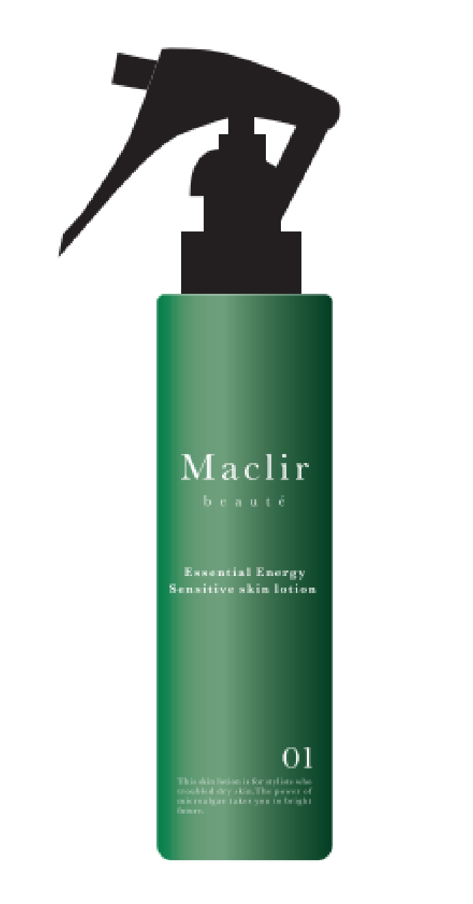
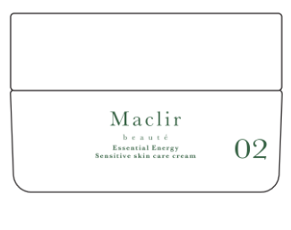

輝く明日のために素肌から輝く
地球、海、山、水… 私たち人間は、その自然に生かされています。その自然のチカラは、何年にもわたり受け継がれてきました。
そのチカラを、もっとシンプルに、もっとピュアに、そのまま取り入れよう。
マイクロアルジェに秘められた無限のチカラをどこまでも追求した素肌に優しい化粧品ブランド 「Maclir」の誕生です。
Concept
スタイリストの悩みを改善する
もう手荒れに悩まされない
お客様へのサービス向上
手荒れによる離職を防ぐ
寄り添ってきたからわかるスタイリストの悩み
プロジェクトメンバーの一人、森忠夫さんの経営している株式会社オゼキヤは、名古屋で150年にわたって、サロンのそばに立ち、シャンプーなど美容商品を通じて「美」や「楽しさ」を提供しています。
その森さんが、かねてよりスタイリストさんから聞いていた悩み。それが「手荒れ」です。シャンプーやカラーリングなど、日々水と熱による乾燥の繰り返しで職業病とも言えるものでした。
「長年スタイリストさんの寄り添って商品を提供してきた身、この悩みをなんとかしたい！」
こんな森さんの思いを伺い、「マイクロアルジェ（微細藻類）」を扱う商社、マイクロアルジェコーポレーション株式会社の後藤美信さんにもプロジェクトメンバーに加わっていただき、スタイリストさんの手荒れを解消するべく、この３人が集まって「Maclir Beauté（マクリル・ボーテ）」プロジェクトをスタートしました。
Maclir Beautéプロジェクト デザイン担当
北村竜也
Products
商品説明

マクリル ポーテ スキンクリーム 100g
\2,500(税別)
マクリルポーテ 化粧水をなじませた後、本品を塗布し、保護してください。

マクリル ポーテ スキンローション 200ml
\5,000(税別)
１日数回、気になる部分にプッシュして一度洗い流してください。水分を拭き取った後、さらに再度プッシュして潤いを与え、肌になじませてください。
Micro Alge
マイクロアルジェについて
このプロジェクトは、「マイクロアルジェコーポレーション株式会社」が研究しているマイクロアルジェ（微細藻類）を使用したスタイリスト向け化粧品を製作するものです。
マイクロアルジェは、顕微鏡でしか見えない小さな藻（＝微細藻類）のことです。マイクロアルジェの持つパワーは、タンパク質、脂質、ビタミン、ミネラルなど生体に整理活動に必要な生理活性物質を創ります。この生理活性物質によって、外界の刺激から守ってくれます。
「Maclir Beauté（マクリル・ボーテ）」は、海の神様から名付けた名前であり。マイクロアルジェが海に生息する微細藻類であることが由来です。
About Us
代表メッセージ
年々増加の傾向をたどる美容師。店舗数はもちろん、美容師免許を取得した数も増加の傾向です。その反面、理美容師の在籍期間は1～3年が30% 程度で、潜在的有資格者のなかでは、30代の女性が半数以上を占めます。せっかく資格をとっても、何らかの事情で辞めなければならないことを考えると、この問題を解決して、長く働ける環境づくりは急務と言えます。
ある調査によると、元理容師・元美容師が辞める理由は、あくまで給与や勤務時間に対する不満、労働環境による課題が多く、仕事自体が嫌になって辞めたのではないようです。その一方で、薬品アレルギーや手荒れがひどく、体力的な問題で辞めることも15% 程度あるようです。本人に働く意欲があっても辞めざるを得ない。そのような原因をなくすこと、それが我々の取り組む課題です。
我々オゼキヤは、これまで理美容品の卸として、長年頑張って参りました。そんな中、スタイリストさんからの声を聞いておきながら、立場上作れなかったことに少し落胆しているところでした。
今回、マイクロアルジェの後藤さん、北村竜也デザイン事務所をはじめとした関係者さんとの出会い、そしてReadyforさんからこのような機会をいただき、本当に感謝しております。
少しでもスタイリストさん、そしてサロンのお役に立てるよう、我々ができることを追求していく第一歩です。
「輝く明日のために、素肌から輝く」Maclir Beauté（マクリル・ボーテ）をぜひ皆さん、応援してください。よろしくお願いいたします。笑顔あふれる世の中を、「美」を作り出すサロンから作りたいと思っています。
株式会社オゼキヤ
森忠夫
Messages
応援メッセージ
Contact
お問い合わせ
製品に関するご依頼やご質問等のお問い合わせは、下のフォームよりお受けしております。必要事項をご記入し、個人情報の取扱について予めご了承いただいた上で送信して下さい。
下記につきまして、あらかじめご了承くださいますようお願いいたします。
・各種ご質問に対する返答につきましては、原則メールにて対応させていただきます。（メールアドレスは正確にご入力ください。弊社からのメールが迷惑メールフィルタにより届かない場合がございますのでご注意ください。）・お問い合わせ頂いた内容により、ご返答できない場合がございます。・弊社からの回答は、お問い合わせいただいたお客さまの特定のご質問にお答えするものです。弊社の許可なく、回答内容の一部もしくは全体を転用、二次利用、または当該お客さま以外に開示することは固くお断りいたします。
©Maclir Beauté All Rights Reserved.